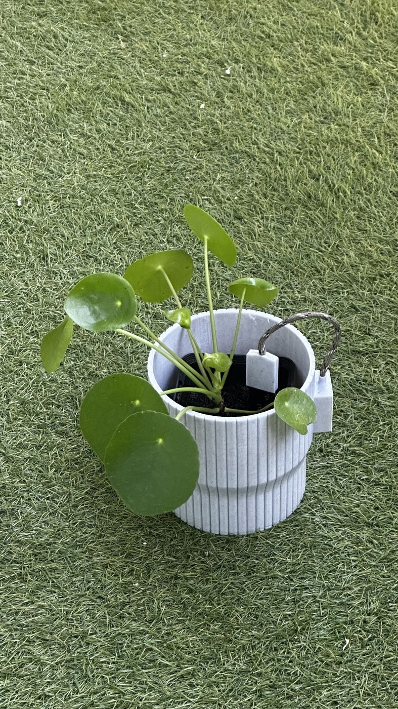
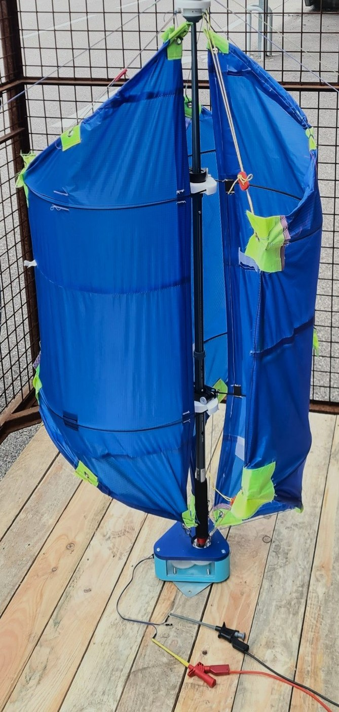
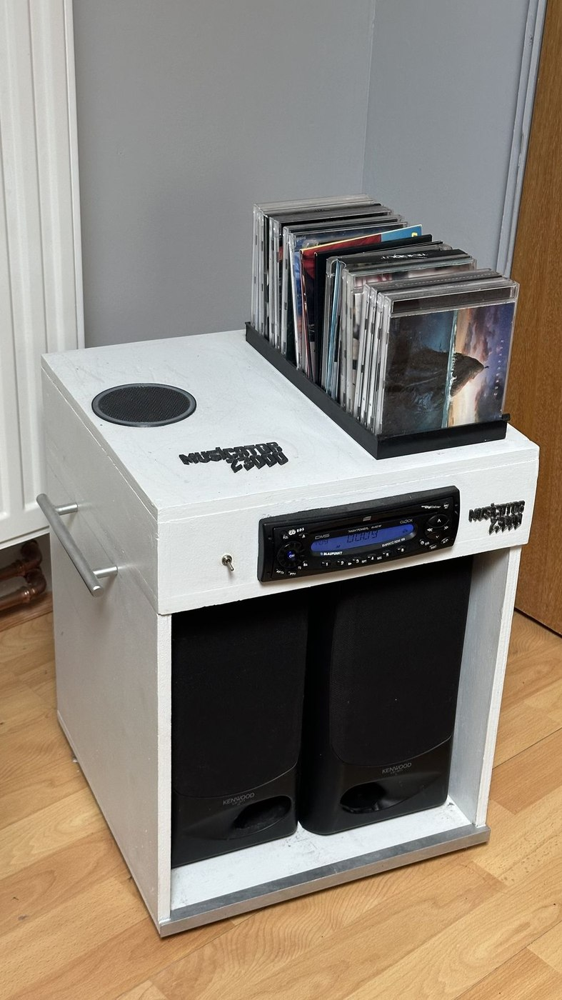
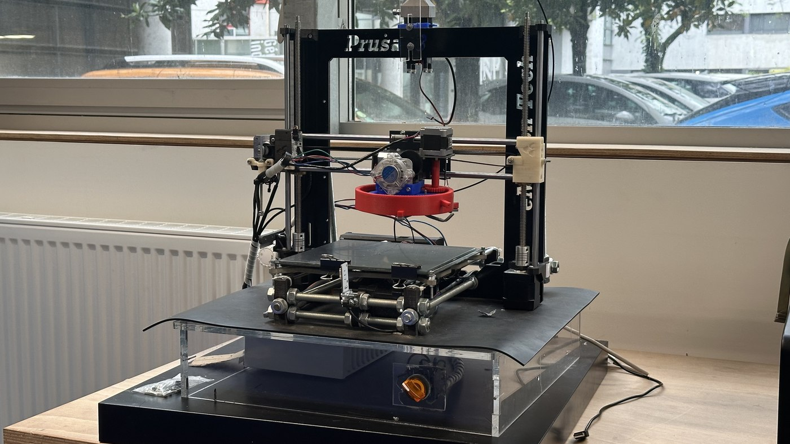

Selected projects
[ 05 entries ]Smart plant pot
I love having plants at home, but I'm not always great at remembering to water them — so I designed a connected pot to monitor my plants' health. A capacitive soil moisture sensor integrates directly into a 3D-printed ribbed enclosure, keeping the electronics discreet. For now it's hardware-only: the sensor reads soil moisture and the wiring is ready for a microcontroller. Next step: log the data and send watering alerts.

Randolienne
A portable Savonius wind turbine you can bring on a hike. The name blends randonnée (hiking) and éolienne (windmill) — it charges a phone from wind alone.
More details
DIY music station
During lockdown I found two speakers, a car radio, a 12V supply and some planks — so I built a unit to let my parents play CDs or the radio anywhere in the house. Next step: add Bluetooth.

LED panel
I'm into photography and video, but the gear gets expensive fast. So I used some LEDs and an old power supply to build a DIY LED panel for shooting.
More details
Local heating 3D printer
Inter-layer adhesion is the main weakness in FDM printing, caused by the temperature gap between layers. We built a proof of concept using localized laser heating to bond layers as they print.
More details